第七节 Mixer基础与实现
Agenda
- Istio架构回顾&Mixer介绍
- Mixer的功能和设计
- Mixer的配置模型
- Mixer的典型应用
- Mixer实践1和2
1、回顾:Istio架构
Istio Control plane API
- Pilot: Config data to proxies
- Mixer: Policy checks, telemetry
- Citadel: TLS certs to proxies
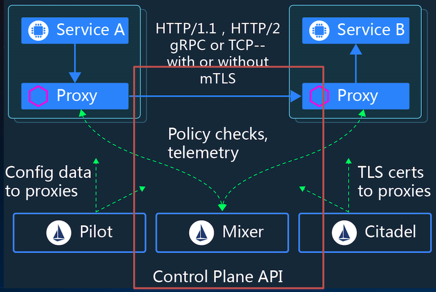
1-1 Istio 官方四大功能中两个基于Mixer实现 Control & Observer
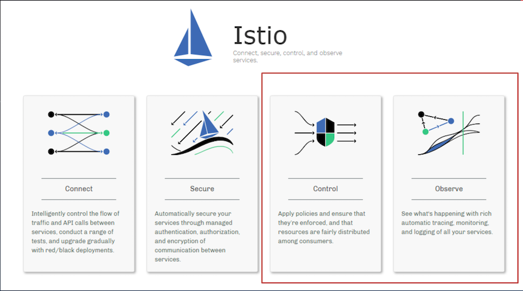
1-2 Mixer在Istio中角色
- 功能上:负责策略控制和遥测收集
- 架构上:提供插件模型，可以扩展和定制
2、Mixer的功能和设计
2-1 没有Mixer的时候 Total Chaos
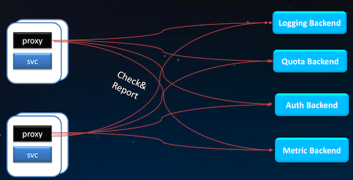
2-2 Mixer的Adapter机制
https://istio.io/docs/concepts/policies-and-telemetry/
Mixer 处理不同基础设施后端的灵活性是通过使用通用插件模型实现的，这种插件称为Adapter。
Mixer 通过它们与不同的基础设施后端连接，这些后端可提供核心功能，提供日志、监控、配额、ACL 检查等
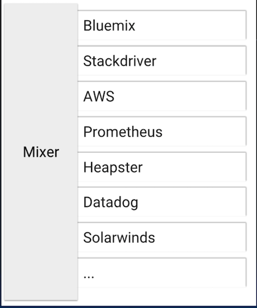
2-3 Mixer完整视图
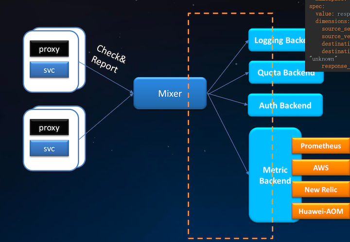
解耦、中介、运维时配置
Mixer:
- Route to backend services
- Route to backend metric
Custom Metrics
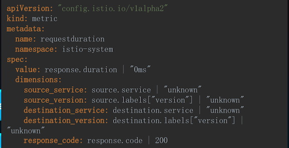
2-4 Mixer的处理流程
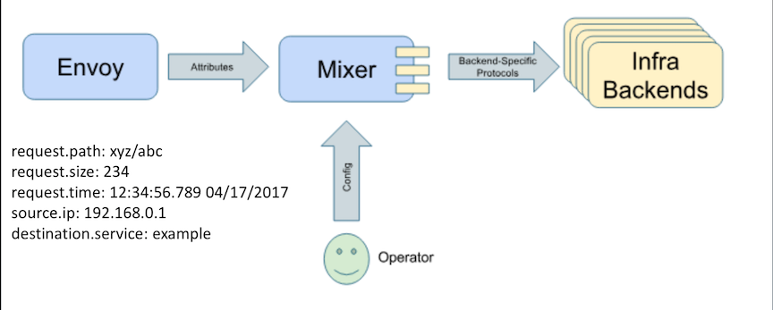
Envoy生成属性上报MixerMixer调用对应后端处理属性
https://istio.io/docs/reference/config/policy-and-telemetry/attribute-vocabulary/
2-5 Mixer 配置模型概述
Handler: 创建Handler,即配置Mixer适配器。Instance: 从Istio属性中生成instance。Rule: 配置一组规则，这些规则描述了何时调用特定适配器及哪些实例。
3、Mixer的配置模型
3-1 Mixer 配置模型1: Handler
实例化一个Adapter，包括了Mixer和后端交互的接口。
apiVersion: "config.istio.io/v1alpha2"
kind: stdio
metadata:
name: handler
spec:
outputAsJson: true
Stdio Adapter 定义参照: mixer/adapter/stdio/config/config.proto:94
3-2 Mixer 配置模型2:实例(Instance)
apiVersion: "config.istio.io/v1alpha2"
kind: logentry
metadata:
name: accesslog
namespace: {{ .Release.Namespace }}
spec:
severity: '"Info"'
timestamp: request.time
variables:
sourceIp: source.ip | ip("0.0.0.0")
sourceApp: source.labels["app"] | ""
sourcePrincipal: source.principal | ""
sourceName: source.name | ""
destinationApp: destination.labels["app"] | ""
destinationIp: destination.ip | ip("0.0.0.0")
destinationServiceHost: destination.service.host | ""
destinationWorkload: destination.workload.name | ""
destinationName: destination.name | ""
destinationNamespace: destination.namespace | ""
protocol: request.scheme | context.protocol | "http"
method: request.method | ""
url: request.path | ""
responseCode: response.code | 0
responseSize: response.size | 0
requestSize: request.size | 0
requestId: request.headers["x-request-id"] | "" userAgent: request.useragent | "" responseTimestamp: response.time
...
实例将请求中的属性映射成为适配器的输入，每次请求适配器消费的数据。
3-3 Mixer 配置模型3:规则(Rule)
apiVersion: "config.istio.io/v1alpha2"
kind: rule
metadata:
name: stdio
namespace: {{ .Release.Namespace }}
spec:
match: context.protocol == "http" || context.protocol == "grpc"
actions:
- handler: handler.stdio
instances:
- accesslog.logentry
告诉 Mixer 哪个 instance 在什么时候发送给哪个 handler来处理
3-4 Request的属性处理流程
- 接收属性
- 补充属性
- 处理属性
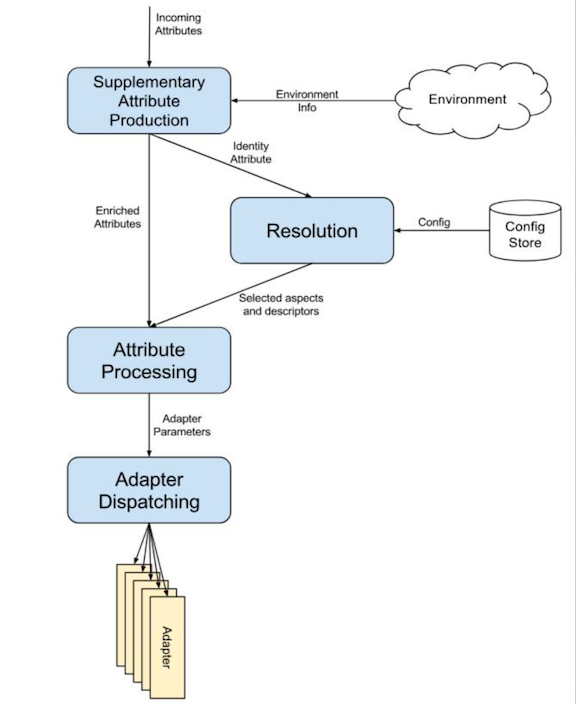
3-5 Mixer Adapters
https://istio.io/docs/reference/config/policy-and-telemetry/adapters/
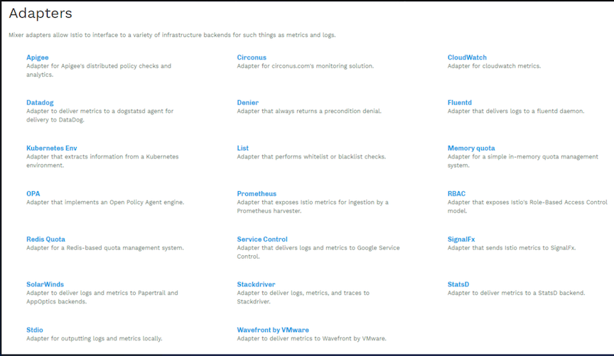
3-6 Mixer 的 Check Adapter
mixer/adapter/list/list.go
Adapter实现
func (h *handler) HandleListEntry(_ context.Context, entry *listentry.Instance) (adapter.CheckResult, error) {
h.lock.Lock()
l := h.list
err := h.lastFetchError
h.lock.Unlock()
if l == nil {
// no valid list
return adapter.CheckResult{}, err
}
var value string
...
return getCheckResult(h.config, code, msg), nil
}
https://github.com/istio/istio/blob/master/mixer/adapter/list/config/config.proto
Adapter配置定义
// Configuration format for the `list` adapter.
message Params {
// Where to find the list to check against. This may be omitted for a completely local list.
string provider_url = 1;
...
// Determines the type of list that the adapter is consulting.
enum ListEntryType {
// List entries are treated as plain strings.
STRINGS = 0;
// List entries are treated as case-insensitive strings.
CASE_INSENSITIVE_STRINGS = 1;
// List entries are treated as IP addresses and ranges.
IP_ADDRESSES = 2;
// List entries are treated as re2 regexp. See [here](https://github.com/google/re2/wiki/Syntax) for the supported syntax.
REGEX = 3;
}
// Determines the kind of list entry and overrides.
ListEntryType entry_type = 7;
// Whether the list operates as a blacklist or a whitelist.
bool blacklist = 8;
}
3-7 Mixer 的 Report Adapter
https://github.com/istio/istio/tree/master/mixer/adapter/stdio
Adapter实现
func (h *handler) HandleLogEntry(_ context.Context, instances []*logentry.Instance) error {
var errors *multierror.Error
fields := make([]zapcore.Field, 0, 6)
for _, instance := range instances {
entry := zapcore.Entry{
LoggerName: instance.Name,
Level: h.mapSeverityLevel(instance.Severity),
Time: instance.Timestamp,
}
var logEntryTypes map[string]istio_policy_v1beta1.ValueType
if typeInfo, found := h.logEntryTypes[instance.Name]; found {
logEntryTypes = typeInfo.Variables
}
for _, varName := range h.logEntryVars[instance.Name] {
if value, ok := instance.Variables[varName]; ok {
fields = append(fields, zap.Any(varName, convertValueTypes(value, varName, logEntryTypes)))
}
}
if err := h.write(entry, fields); err != nil {
errors = multierror.Append(errors, err)
}
fields = fields[:0]
}
return errors.ErrorOrNil()
}
Adapter配置定义
https://github.com/istio/istio/blob/master/mixer/adapter/stdio/config/config.proto
// Configuration format for the `stdio` adapter
message Params {
// Stream is used to select between different log output sinks.
enum Stream {
// Output to the Mixer process' standard output stream. This is the default value.
STDOUT = 0;
...
// The maximum number of days to retain old rotated log files based on the
// timestamp encoded in their filename. Note that a day is defined as 24
// hours and may not exactly correspond to calendar days due to daylight
// savings, leap seconds, etc. The default is to remove log files
// older than 30 days. 0 indicates no limit.
int32 max_days_before_rotation = 8;
// The maximum number of old rotated log files to retain. The default
// is to retain at most 1000 logs. 0 indicates no limit.
int32 max_rotated_files = 9;
}
3-8 Mixer的高可用设计
- 无状态
- 高可以用
- 缓存和缓冲
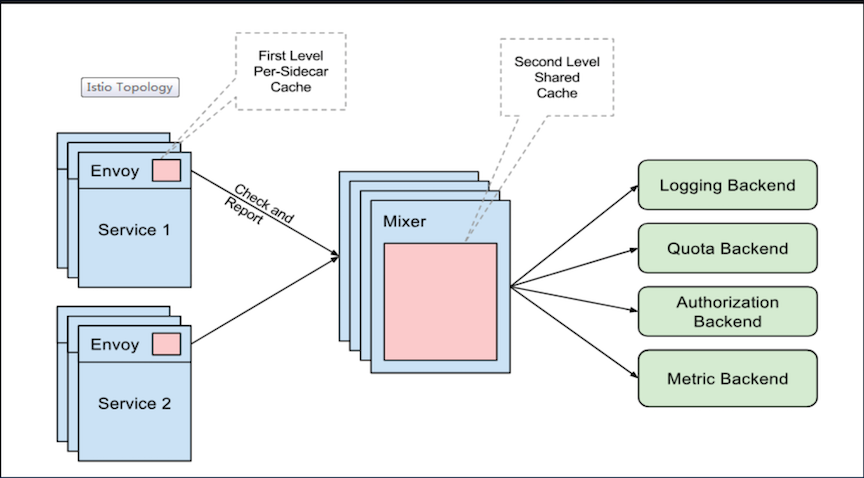
Envoy
- First Level: Per-sidecar cache
Mixer
- Second Level: Shared Cache
3-9 Mixer 的 Batch Report
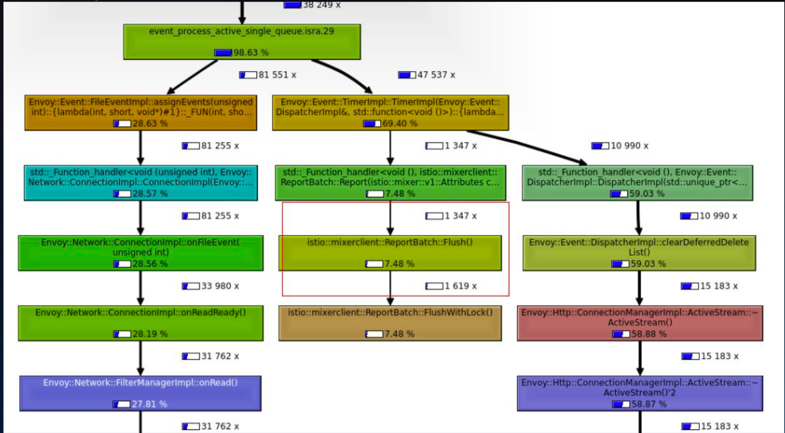
4、Mixer的典型应用
4-1 Mixer典型应用1: 华为云应用服务网格
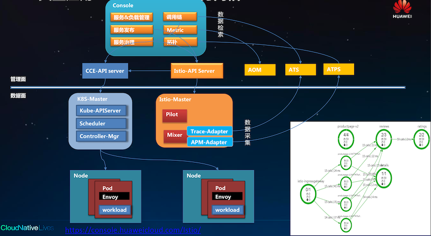
4-2 Mixer典型应用2: Google Apigee
https://docs.apigee.com/api-platform/istio-adapter/concepts
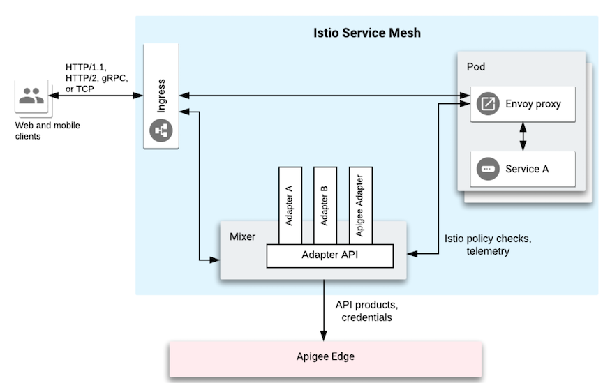
5、Mixer实践1和2
5-1 实践1 从0开发并运行一个Mixer Adapter:原理
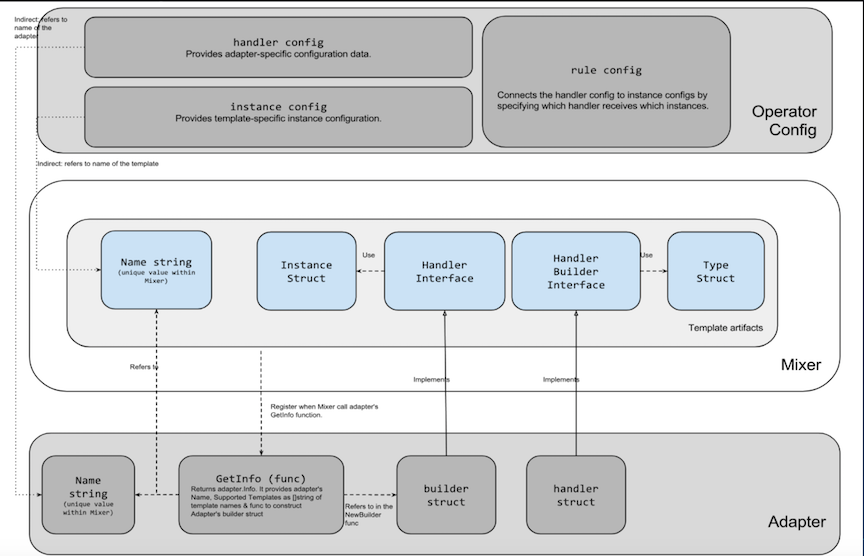
5-2 两个角色
配置模板使用一个 Adapter => 开发代码定义模板开发一个Adapter
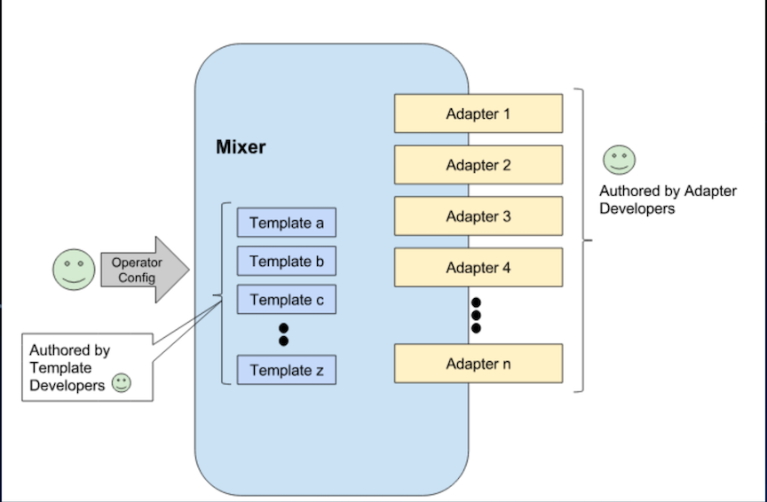
5-3 实践1 从0开发并运行一个Mixer Adapter:步骤
1.创建独立的Adapter目录，并开发Adapter的代码开发Adapter代码
cd $MIXER_REPO/adapter && mkdir mysampleadapter && cd mysampleadapter
#创建mysampleadapter .go文件定义处理逻辑
2.配置config.proto，描述配置的定义。
#创建config.proto文件，描述adapter的配置参数
$ mkdir config
3.根据proto生成go的配置，并在adapter代码中使用
go generate ./...
go build ./...
4.在Mixer中注册这个新的Adapter。
# 在inventory.yaml 中注册adapter， mysampleadapter: "istio.io/istio/mixer/adapter/mysampleadapter"
go generate $MIXER_REPO/adapter/doc.go
5.配置并使用新创建的adapter。
#在testdata目录下创建使用该adapter的配置，即handler，instance，rule。
$mkdir $MIXER_REPO/adapter/mysampleadapter/testdata
#确认两个文件attributes.yaml和mysampleadapter.yaml
6.启动mixer 服务端
pushd $ISTIO/istio && make mixs
$GOPATH/out/linux_amd64/release/mixs server --configStoreURL=fs://$(pwd)/mixer/adapter/mysampleadapter/testdata
7.启动一个客户端，模拟上报数据
pushd $ISTIO/istio && make mixc
$GOPATH/out/linux_amd64/release/mixc report -s destination.service="svc.cluster.local" -t request.time="2019-01-10T20:00:00Z"
8.查看结果输出
tail $ISTIO/istio/out.txt
5-4 效果
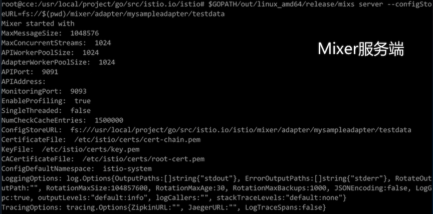
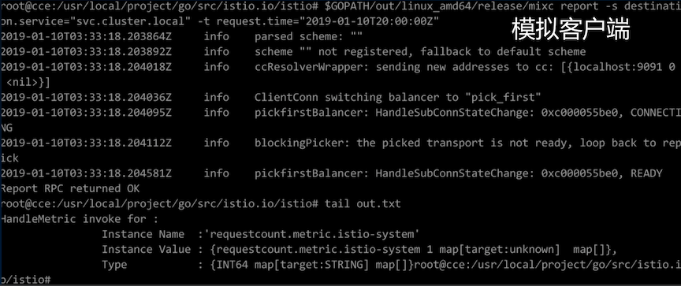
6、实践2 通过Mixer收集自定义的遥测数据:目标
- 编写自定义的
Metric模板 - 在
Istio中创建自定义Metric、Prometheus Handler和Rule - 认识
Prometheus Adapter - 实践
Prometheus的主要能力
6-1 实践2 通过Mixer收集自定义的遥测数据:步骤
1.创建配置，包括prometheus的handler、metric和rule
kubectl apply -f double-request.yaml
2.查看创建的对象
kubectl get metrics.config.istio.io -nistio-system
kubectl get rules.config.istio.io -nistio-system
kubectl get prometheus.config.istio.io -nistio-system
3.发起对服务的访问，生成访问metric数据
4.通过Prometheus查看metric数据
- 4.1 查看
doublereques的metrichttp://49.4.84.29:9090/graph?g0.range_input=1h&g0.expr=istio_double_request_count&g0.tab=1 - 4.2 通过
prometheus检索特定目标的 metricistio_double_request_count{destination="details-v1"}
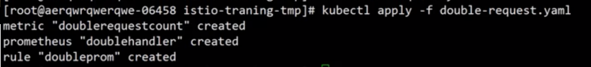
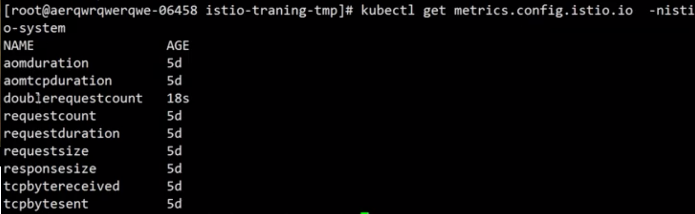
6-2 效果
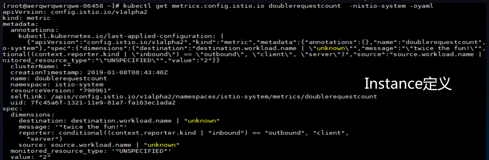
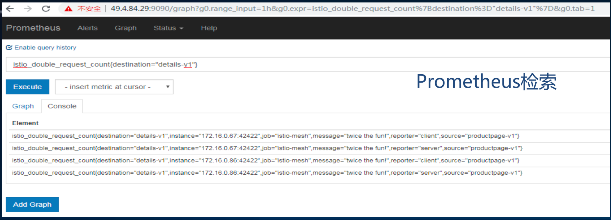